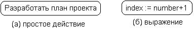
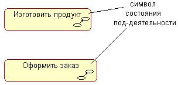
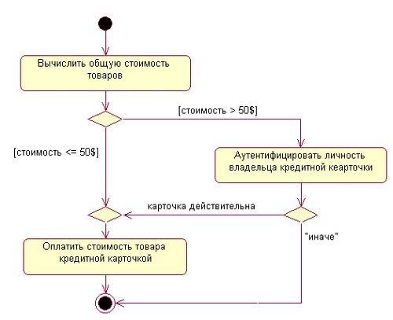
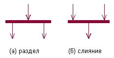
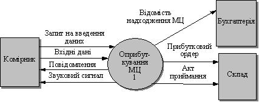

Розробка діаграми діяльності, інформаційної моделі системи. Dfd-діаграми
Методичні рекомендації до самостійної роботи студентів
Третій спосіб реалізації варіанту використання - описати алгоритм допомогою діаграми діяльності. З одного боку, діаграма діяльності - це повноцінна діаграма UML, з іншого боку, діаграма діяльності небагатьом відрізняється від блок-схеми (а тим самим і від псевдокоду). Таким чином, реалізація варіанту використання діаграмою діяльності є компромісним способом ведення розробки - по суті, це проектування зверху вниз в термінах і позначеннях UML.
Кожне перебування на діаграмі діяльності відповідає виконанню деякої елементарної операції, а перехід в наступний стан спрацьовує лише при завершенні цій, операції в попередньому стані. Графічно діаграма діяльності представляється у формі графа діяльності, вершинами якого є стани дії, а дугами - переходи від одного стану дії до іншого.
Таким чином, діаграми діяльності можна рахувати частным випадком діаграм станів. Саме вони дозволяють реалізувати в мові UML особливості процедурного і синхронного управління, обумовленого завершенням внутрішніх деятельностей і дій. Метамодель UML надає для цього необхідні терміни і семантику. Основним напрямом використання діаграм діяльності є візуалізація особливостей реалізації операцій класів, коли необхідно представити алгоритми їх виконання. При цьому кожен стан може бути виконанням операції деякого класу або її частини, дозволяючи використовувати діаграми діяльності для опису реакцій на внутрішні події системи.
У контексті мови UML діяльність (activity) є деякою сукупністю окремих обчислень, що виконуються автоматом. При цьому окремі елементарні обчислення можуть наводити до деякого результату або дії (action). На діаграмі діяльності відображується логіка або послідовність переходу від однієї діяльності до іншої, при цьому увага фіксується на результаті діяльності. Сам же результат може привести до зміни стану системи або повернення деякого значення.
Стан дії (action state) є спеціальним випадком стану з деякою вхідною дією і принаймні одним переходом, що виходить із стану. Цей перехід неявно передбачає, що вхідна дія вже завершилася. Стан дії не може мати внутрішніх переходів, оскільки воно є елементарним. Звичайне використання стану дії полягає в моделюванні одного кроку виконання алгоритму (процедури) або потоку управління.
Графічно стан дії зображається фігурою, що нагадує прямокутник, бічні сторони якого замінені опуклими дугами (рис. 3.1). Усередині цієї фігури записується вираження дії (action-expression), яка має бути унікальним в межах однієї діаграми діяльності.

Рисунок 3.1 - Графічне зображення стану дії
Дія може бути записана на природній мові, деякому псевдокоді або мові програмування. Жодних додаткових або неявних обмежень при записі дій не накладаються. Рекомендується як ім'я простої дії використовувати дієслово із словами пояснень. Якщо ж дія може бути представлена в деякому формальному вигляді, то доцільно записати його на тій мові програмування, на якому передбачається реалізовувати конкретний проект.
Інколи виникає необхідність представити на діаграмі діяльності деяку складну дію, яка, у свою чергу, складається з декількох простіших дій. В цьому випадку можна використовувати спеціальне позначення так званого стану під-діяльності (subactivity state). Такий стан є графом діяльності і позначається спеціальною піктограмою в правому нижньому кутку символу стану дії (рис. 3.2). Ця конструкція може застосовуватися до будь-якого елементу мови UML, яка підтримує «вкладеність» своєї структури. При цьому піктограма може бути додатково помічена типом вкладеної структури.

Рисунок 3.2 - Графічне зображення стану під-діяльності
Кожна діаграма діяльності повинна мати єдине початкове і єдине кінцеве стани. При цьому кожна діяльність починається в початковому стані і закінчується в кінцевому стані. Саму діаграму діяльності прийнято розташовувати так, щоб дії слідували зверху вниз. В цьому випадку початковий стан зображується у верхній частині діаграми, а кінцеве - в її нижній частині.
При побудові діаграми діяльності використовуються лише нетригерні переходи, тобто такі, які спрацьовують відразу після завершення діяльності або виконання відповідної дії. Цей перехід переводить діяльність в подальший стан відразу, як тільки закінчиться дія в попередньому стані. На діаграмі такий перехід зображується суцільною лінією із стрілкою. Якщо із стану дії виходить єдиний перехід, то він може бути ніяк не помічений. Якщо ж таких переходів декілька, то спрацювати може лише один з них. Саме в цьому випадку для кожного з таких переходів має бути явно записана сторожова умова в прямих дужках. При цьому для всіх переходів, що виходять з деякого стану, повинна виконуватися вимога істинності лише одного з них. Подібний випадок зустрічається тоді, коли послідовно виконувана діяльність повинна розділитися на альтернативні гілки залежно від значення деякого проміжного результату. Така ситуація отримала назву галуження, а для її позначення застосовується спеціальний символ.
Графічно галуження на діаграмі діяльності позначається невеликим ромбом, усередині якого немає жодного тексту (рис. 3.3). У цей ромб може входити лише одна стрілка від того стану дії, після виконання якого потік управління має бути продовжений по одній з гілок, що взаємно виключають. Прийнято вхідну стрілку приєднувати до верхньої або лівої вершини символу галуження. Стрілок, що виходять, може бути дві або більш, але для кожної з них явно вказується відповідна сторожова умова (рис.3.4).

Рисунок 3.3 - Графічне зображення умови
У мові UML для представлення паралельних процесів використовується спеціальний символ для розділення і злиття паралельних обчислень або потоків управління. Таким символом є пряма риска, аналогічно позначенню переходу у формалізмі мереж Петрі (рис.3.4).
Як правило, така риска зображується відрізком горизонтальної лінії, товщина якої декілька ширше за основні суцільні лінії діаграми діяльності. При цьому розділення (concurrent fork) має один вхідний перехід і декілька що виходять (рис. 3.4, а). Злиття (concurrent join), навпаки, має декілька вхідних переходів і що один виходить (рис. 3.4, б).

Рисунок 3.4 - Графічне зображення розділення та злиття
Слід зауважити, що діаграма діяльності, так само як і інші види канонічних діаграм, не містить засобів вибору оптимальних рішень. При розробці складних проектів проблема вибору оптимальних рішень стає вельми актуальною.
Діаграма потоків даних (data flow diagram, DFD) - один з основних інструментів структурного аналізу і проектування інформаційних систем, що існували в «доюмээльную» епоху. Незважаючи на місце, що має, в сучасних умовах зміщення акцентів від структурного до об'єктно-орієнтованого підходу до аналізу і проектування систем, «старовинні» структурні нотації як і раніше широко і ефективно використовуються як у бізнес-аналізі, так і в аналізі інформаційних систем.
Історично склалося так, що для опису діаграм DFD використовуються дві нотації - Йодана (Yourdon) і Гейна-Сарсона (Gane - Sarson), що відрізняються синтаксисом.
Інформаційна система приймає ззовні потоки даних. Для позначення елементів середовища функціонування системи використовується поняття зовнішньої суті. Усередині системи існують процеси перетворення інформації, що породжують нові потоки даних. Потоки даних можуть поступати на вхід до інших процесів, поміщатися(і витягатися) в накопичувачі даних, передаватися до зовнішніх сутностей.
Ця модель, як і більшість інших структурних моделей - ієрархічна модель. Кожен процес може бути підданий декомпозиції, тобто розбиттю на структурні складові, стосунки між якими в тій же нотації можуть бути показані на окремій діаграмі. Коли досягнута необхідна глибина декомпозиції - процес нижнього рівня супроводжується міні-специфікацією (текстовим описом).
DFD описує:
- функції обробки інформації (роботи, процеси);
- документи (стрілки, arrow), об'єкти, співробітників або відділи, що беруть участь в обробці інформації;
- зовнішні посилання (external references), що забезпечують інтерфейс із зовнішніми об'єктами, які знаходяться за межами системи, що моделюється;
- таблиці для збереження документів (сховища даних, data store).
Роботи. У DFD роботи являють собою функції системи, що перетворюють входи у виходи. Так само як роботи IDEF3, вони мають входи і виходи, але не підтримують керування і механізми, як IDEFO.
Зовнішні сутності. Зовнішні сутності зображують входи в систему і/або виходи із системи. Зовнішні сутності зображуються у виді прямокутника з тінню і звичайно розташовуються по краях діаграми. Одна зовнішня сутність може бути використана багаторазово на одній або декількох діаграмах. Звичайно такий прийом використовують, щоб не малювати занадто довгих і заплутаних стрілок.
Сховища даних. У матеріальних системах сховища даних зображуються там, де об'єкти очікують обробки, наприклад у черзі. У системах обробки інформації сховища даних є механізмом, який дозволяє зберегти дані для наступних процесів.
Злиття і розгалуження стрілок. У DFD стрілки можуть зливатися і розгалужуватися, що дозволяє описати декомпозицію стрілок. Кожний новий сегмент стрілки, що зливається або розгалужується може мати власне ім'я.
Керуюче сховищемістить керуючу інформацію, яка після занесення її у сховище може використовуватись у будь-який час і в будь-якому порядку. Імя керуючого сховища має відповідати його вмісту і бути іменником.
Керуючий потік являє собою «провідник» для управляючої інформації. Остання, як правило, подається дискретними сигналами. Його імя складається з іменників і прикметників. Керуючі потоки можуть як повідомляти керуючому процесу про зміни зовнішніх умов, так і виконувати команди, які він генерує. При цьому режим виконання керуючого процесу залежить від типу керуючого потоку. Використовуються такі типи керуючих потоків:
- Т-потік (trigger flow) - керуючий потік, що може викликати виконання процесу за допомогою однієї короткої операції. Він діє так само, як вмикач світла, єдине натиснення на який спричинює засвічування електричної лампи;
- А-потік (activator flow) - керуючий потік, що може змінювати виконання окремого процесу, а саме: забезпечувати безперервне виконання процесу (підпроцесу) доти, доки потік «увімкнений», тобто плине безперервно; з «вимкненням» потоку виконання процесу (підпроцесу) закінчується. Діє, як перемикач електричної лампочки, здатний спрацьовувати на її вмикання і вимикання;
- E/D-потік (enable/disable flow) - потік керування процесом, що може перемикати виконання окремого процесу. Доки керуюча інформація надходить по Е-лінії, процес триває; при збудженні
D-лінії - припиняється. Це аналог вимикача з двома кнопками: одна - для вмикання світла, інша - для вимикання. Можна використовувати три типи таких потоків: Е-потік, D-потік, E/D-потік.
Вузол змінювання типу використовується для змінювання типу керуючого потоку, а також для заміни типу потоку даних на тип керуючого потоку і навпаки. При цьому вміст потоку не змінюється. Побудову ієрархії діаграм потоків даних (DFD) корисно здійснювати у такій послідовності:
- вивчення множини вимог і розподіл їх на декілька основних функціональних груп.
- ідентифікація зовнішніх обєктів, з якими має бути звязана система, і основних видів інформації, що циркулює між обєктами та системою.
- розроблення попереднього варіанта контекстної діаграми, на якій основні функціональні групи подаються процесами, зовнішні обєкти - зовнішніми сутностями, основні види інформації - потоками даних між процесами і зовнішніми сутностями.
- аналіз попередньої контекстної діаграми і внесення в неї змін за результатами аналізу.
- побудова контекстної діаграми обєднанням усіх процесів попередньої діаграми в один процес, а також групуванням потоків даних.
- формування DFD першого рівня на базі процесів попередньої контекстної діаграми.
- перевірка основних вимог за DFD поточного рівня і внесення змін (за потреби). розбиття вимог на більш детальні та ідентифікація процесів або специфікацій процесів, які відповідають цим вимогам.
- додавання визначень нових потоків до словника даних при появі їх на діаграмі.
- декомпозиція кожного процесу поточної DFD за допомогою деталювальної діаграми або специфікації процесу в разі, якщо функцію процесу складно або неможливо подати комбінацією процесів.
- після побудови чергових двох-трьох рівнів моделі проведення ревізії з метою перевірки коректності та підвищення зрозумілості моделі.
- якщо діаграма містить процеси, не описані специфікаціями, перехід до п. 7.

Рисунок 3.5 -DFD модель
Побудова діаграм потоків даних (DFD) обовязково має супроводжуватися формуванням описів усіх даних, що циркулюють у системі. Для цього використовуються текстові засоби моделювання - словники даних.Словник данихявляє собою певним чином організований список усіх елементів даних системи з точними визначеннями їх. Для визначення даних застосовуються такі види описів:
- опис вмісту потоків і сховищ, зображених на DFD;
- опис композиції агрегатів даних (комплексних даних) у складі потоків і сховищ;
- уточнення значень і областей дії елементарних фрагментів інформації у потоках даних і сховищах;
- опис відношень між сховищами.
Опис потоку даних у словнику містить імя потоку, його тип і атрибути. Опис складається з набору статей, кожна з яких починається із символа «@» і ключового слова - заголовка статті.
Інформація за типом потоку визначає:
- прості (елементарні) та групові (комплексні) потоки;
- внутрішні (що існують усередині системи) і зовнішні (що повязують систему з іншими системами) потоки;
- потоки даних або керуючі потоки;
- неперервні (що набувають будь-яких значень з певного діапазону) або дискретні (що набувають лише певних значень) потоки.
Атрибути потоку даних можуть включати:
- імена-синоніми потоку даних у відповідності до вузлів змінювання імені;
- БНФ (визначення у формі Бекуса-Наура) - визначення для групових потоків;
- одиниці вимірювання потоку;
- діапазон значень для неперервних потоків і список значень та смисл їх - для дискретних потоків;
- список номерів діаграм різних типів, до яких може належати потік;
список групових потоків, до якого входить даний потік (як елемент БНФ-визначення);
- коментар з додатковою інформацією.
Для формального опису поділу та обєднання потоків може бути використане БНФ-визначення. При цьому важливо, щоб кожний компонент потоку-предка був іменованим. Обєднуючи підпотоки, не обовязково вилучати спільні компоненти, а в разі поділу потоків підпотоки можуть мати однакові компоненти.
Специфікація процесу (СП) являє собою короткий (до однієї сторінки) опис процесу, створюваний тоді, коли подальша деталізація процесу за допомогою DFD стає недоцільною. Сукупність усіх СП є повною специфікацією системи. За своєю суттю СП є описом алгоритму задачі, виконуваної процесом, містить номері/або імя процесу, перелік вхідних і вихідних даних, опис тіла процесу, тобто алгоритму чи процедури, що перетворює вхідні потоки даних на вихідні.
Специфікація процесу починається з опису вхідних і вихідних даних, після чого вказується ключове слово, наприклад @ СПЕЦПРОЦ:
@ ВХІД =<імя елемента даних>
@ ВИХІД= <імя елемента даних>
@ СПЕЦПРОЦ<номер і/або імя процесу> ,
де <імя елемента даних> - відповідне імя із словника даних.
Якщо елемент даних одночасно є вхідним і вихідним для процесу, він може бути описаний двічі за допомогою @ ВХІД і@ ВИХІД або одноразово за допомогою @ ВХІД/ВИХІД.
Для опису тіла процесу існує багато методів, серед яких можна вирізнитиструктуровану природну мову, або псевдокод, візуальні мови проектування(FLOW-форми та діаграми Нассі-Шнейдермана) та формальні компютерні мови.